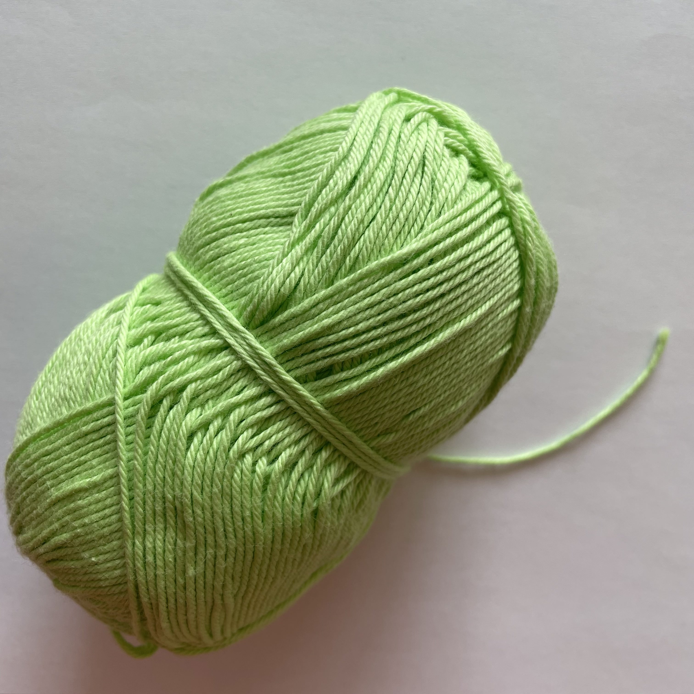

forkortelser der bliver brugt i denne opskrift:
How to
Maske er blot en overordnet beskrivelse fra de mange forskellige typer af masker der findes, men specificere ikke en bestemt type maske.
Videoguide

Amerikansk
ch = chain stitch
Britisk
ch = chain stitch
How to
Lav en løkke på garnet, og sæt den på din hæklenål – træk det sammen så det strammes op på din nål.
Slå garnet om din hæklenål, og træd det nu igennem løkken, nu har du en lm, fortsæt til du har det antal du skal bruge, eller det som opskriften foreskriver.
Videoguide

How to
Når man skal hækle rundt, vil en hækle opskrift som regel involvere en magisk ring.
Tag enden af garnet og vikl det to gange rundt om din pegefinger.
Lav en løkke.
Stik hæklenålen ind i løkken og træk garnet fra pegefingeren igennem løkken.
Lav en luftmaske (træk garnet igennem løkken igen).
Lav det ønskede antal fastmasker i ringen.
Luk ringen ved at trække i den korte ende af garnet.
Videoguide
Amerikansk
dc = double crochet
Britisk
trc = treble crochet
How to
Slå garnet om nålen, før det igennem masken, slå garnet omkring nålen igen og træk det igennem masken – du har nu 3 løkker på din nål.
Slå garnet om nålen, og træk igennem de 2 forreste løkker på nålen. Slå om igen og træk garnet igennem de sidste 2 løkker på nålen – nu har du lavet en stgm.
Videoguide
Amerikansk
sl st = slip stitch
Britisk
sl st = slip stitch
How to
Bruges som regel i slutninger af hæklingen.
Stik nålen igennem masken, slå om garnet og træk det igennem både masken og løkken på en gang.
Videoguide
Amerikansk
inc = increase
How to
Start med at lave en maske af den type opskriften oplyser. Når den er lavet, så laver du endnu en magen til, i den samme maske, så du har 2 ens masker i den samme maske. Det kan eks. være 2 fm i samme maske. Nogle gange skal der laves endnu flere masker i samme maske, men det vil fremgå i opskriften, eks. lav en udt. Med 3 fm i næste m.
Videoguide